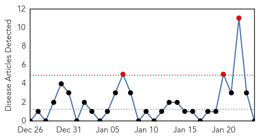
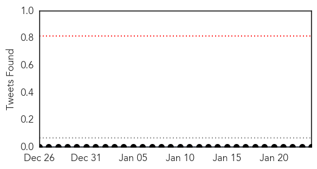
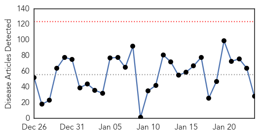
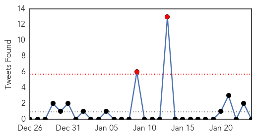

Chikungunya
30-Day Web Trend
3 alerts, 0 warnings

30-Day Twitter Trend
0 alerts, 0 warnings

Article Locations


Article Confidences

Top Articles:
-
No articles found for Jan 24, 2015
Top Tweets:
-
No tweets found for Jan 24, 2015
Unknown
30-Day Web Trend
0 alerts, 0 warnings

30-Day Twitter Trend
2 alerts, 0 warnings

Article Locations


Article Confidences

Top Articles:
- 0.938
- Salmonella outbreak linked to Wonton Foods sprouts ‘appears to be over’
- 0.917
- Chicago Tribune
- 0.917
- Chicago Tribune
- 0.917
- Chicago Tribune
- 0.917
- Chicago Tribune
- 0.917
- Chicago Tribune
- 0.917
- Chicago Tribune
- 0.917
- Chicago Tribune
- 0.866
- California reports 68 measles cases in state since Disney outbreak
- 0.817
- Health dept scrambling to get to the root of CCHF virus
- 0.816
- Documentary “Shots in the Dark” Delves into Catastrophic Vaccine Reactions
- 0.763
- Congo fever virus may have come from Pak, Thar Exp under lens
- 0.763
- The Salmonella Outbreak No One Knew About
- 0.743
- ‘Mugabe obsessed with foreign health service’
- 0.728
- Health Ministry Approves HPV Vaccine As Safe
- 0.725
- Michigan records first child flu death of the year
- 0.632
- Bird flu spreads; 40,000 turkeys to be culled
- 0.612
- Shanghai reports 2nd H7N9 case in 2015- China.org.cn
- 0.609
- Burn unit ICU cannot take any more
- 0.605
- Sri Lanka struggles with mysterious disease
- 0.578
- WTOC-TV: Savannah, Beaufort, SC, News, Weather & Sports
- 0.573
- World Leprosy Day: A glimpse of leprosary in NW China - Xinhua
- 0.554
- NN region ranks second in country for chlamydia
- 0.553
- 56,500 leprosy patients registered in Pakistan
- 0.543
- Scabies outbreak attacks Malawi flood-victims camps
- 0.527
- Are your pets trying to kill you? Zoonosis
- 0.516
- Both viruses and gut bacteria are to blame for inflammatory bowel diseases
- 0.506
- Overcrowded hospitals ‘killed 500’ last year, claims top A&E doctor
Top Tweets:
-
No tweets found for Jan 24, 2015